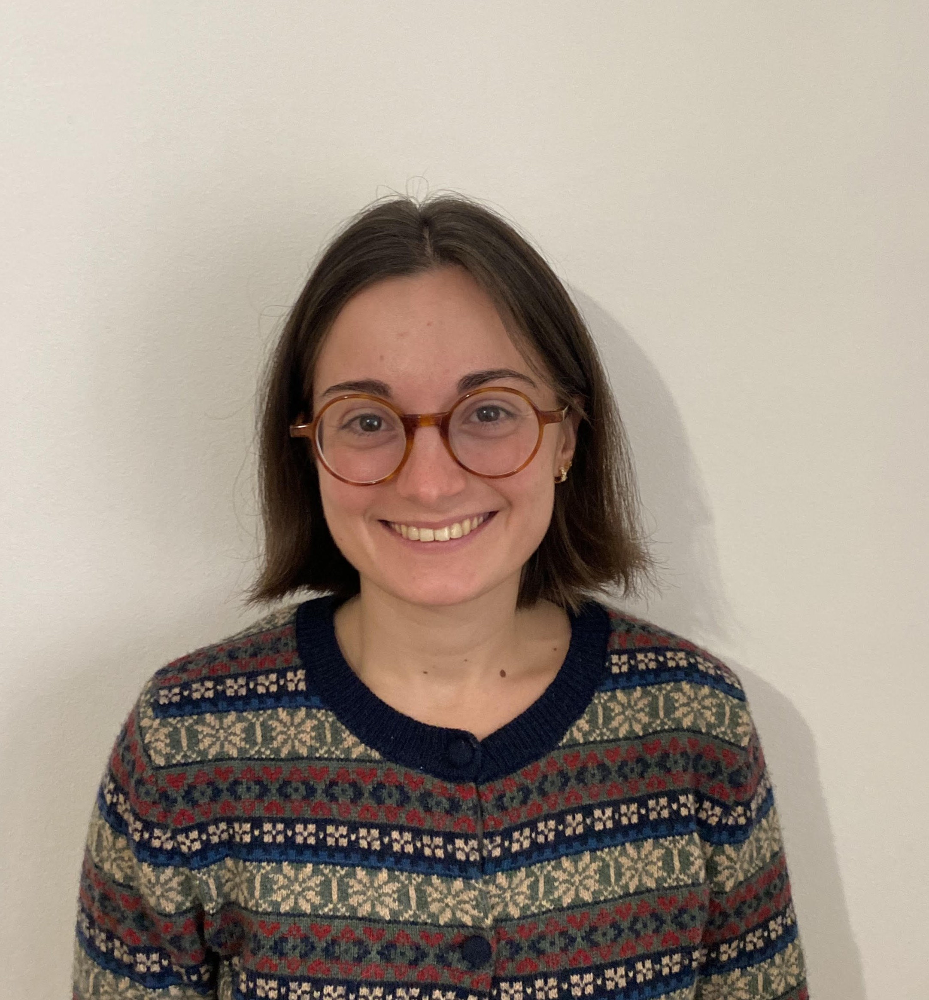

PhD Candidate in Economics
I am a PhD candidate at the Paris School of Economics, supervised by Antoine Bozio.
My research focuses on public economics, using quasi-experimental methods and administrative datasets. I am interested in studying the taxation of capital and labour, and understanding how individuals and firms respond to different policies.
My PhD is funded by the Ramon Areces Foundation.
Before starting my PhD, I completed a Master's degree in Public Policy and Development at the Paris School of Economics, and I hold Bachelor's degrees in Law and Economics from the Pompeu Fabra University in Spain.